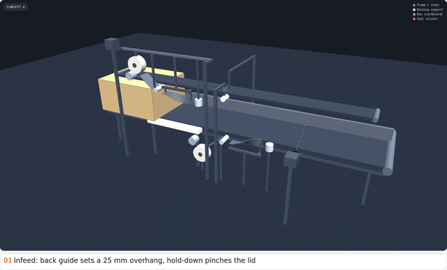
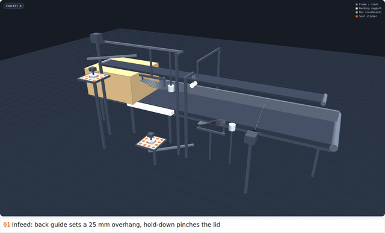
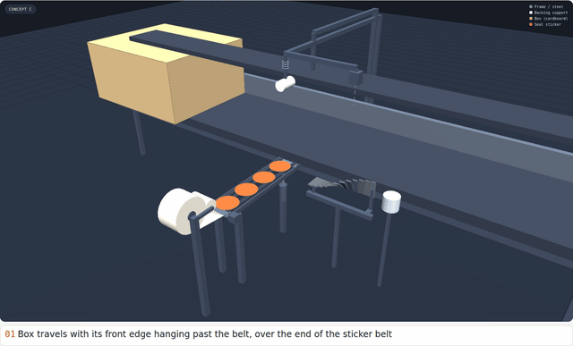
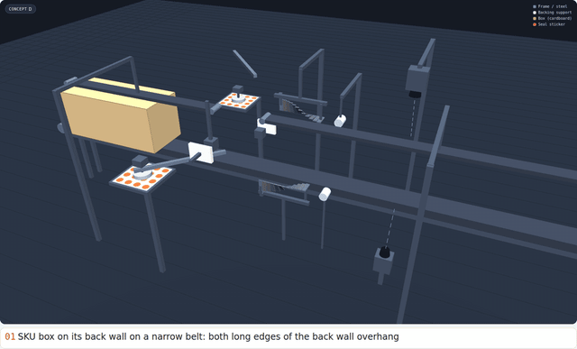
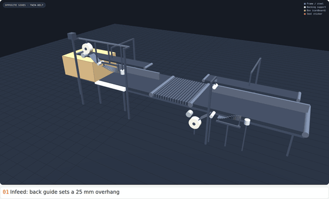
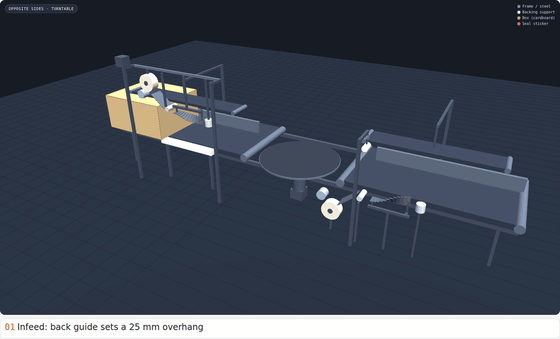

WP4 Sealing: Automated Seal Application
Author: Manfred Low | Supervisor: Mr Soh Eng Keng
Pages: Project overview | WP2 Box Formation | WP4 Sealing (this page)
Table of Contents
1. Scope and Problem
Each kit box travels lying flat and needs one or two tamper-evident seals: 30 mm circles folded 90° over the edge of the lid or base onto the front or back wall, so opening the box tears them [1]. This report refers to them as right-angle edge seals (Figure 1.1). CEVA calls manual sealing a bottleneck and quality risk [1, 2]. Kitting staff close the lid [3], so WP4 covers sealing only.
The objectives are to select a concept that seals all 16 sizes without manual changeover, prove its critical function with a Stage 1 prototype, and find a way to use grid sheets (design timeline: Appendix L).
2. Context and Existing Solutions
2.1 Current Process
Three CEVA operators do the sealing: two apply seals and one checks them. For roll seals, they push each box into a semi-automatic labeller similar to the Zonesun ZS-TB90 [4] and turn it by hand to seal the other side. The labeller only takes rolls, so grid-sheet seals are applied entirely by hand (Figure 2.1).
2.2 Existing Solutions
I analysed four commercial machines (Figure 2.2, Table K1).
The machines that fold the seal are complete units with their own conveyor, and the conveyor-mounted applicator cannot fold. None changes size without manual setup, and all are roll-fed, peeling the seal off its backing at a sharp edge. CEVA requires changeover from a recipe (UAT-11), so WP4 must add changeover, conveyor fit and grid stock, not a new way of peeling [1].
2.3 IP and Gap
I searched Google Patents and the makers’ websites for existing patents and products. The closest patent I could read, US 5,988,251 [8], puts separate labels on two faces of a box and has expired. This was a quick search, not a full patent clearance. The gap rests on the machines I reviewed: none seals right-angle edges on an existing conveyor, changes size from a recipe and takes both stock formats.
3. Design Specifications
Shared targets are on the project overview; the full list is in Appendix A.
| Ref | Target | Design implication |
|---|---|---|
| UAT-02 | Seal in 1 to 2 s per box | Favours sealing on the move |
| UAT-03 | Inlet to outlet under 7 s | Time to turn the box between seals |
| UAT-04 | >= 99.8 % success, shared with WP2 | About 99.9 % per station |
| UAT-14 | 1 or 2 seals per recipe | Seal count and side are recipe fields |
| UAT-15 | 100 % seal check | Camera checks every seal |
Table 3.1. WP4 specifications and what each one constrains.
Each head applies one seal per box, so each head's roll lasts about 3 to 4 h (Appendix F) and an 8-hour run needs a splice or roll change.
4. Concept Development
4.1 Functions
I split sealing into six functions per box (the second seal only where needed), plus changeover once per SKU (Figure 4.1), and listed options for each (Table B1, Figure 4.2) from Section 2.2, label application methods (Appendix D) and my ideas (Appendix B).
4.2 From Functions to Concepts
Before scoring, I removed options that failed any of three hard requirements (Table 4.1).
| Requirement | Options eliminated | Reason |
|---|---|---|
| Seal in 1 to 2 s (UAT-02) | Stop-and-pick with one head | One vacuum pick head needs 1.7 to 2.2 s for two seals (Appendix F), plus the box stop and restart |
| Fold the seal 90° over the edge | Tamp pad and tamp-blow | A tamp presses one face only, so the folded half needs a second step with the box stopped; wipe-on lays and folds the seal in one pass |
| No manual changeover (RCA scope; UAT-11 recipe selection) | Manual adjustment; roll cage | Both must be reset by hand for each box size; a roll cage fits only one size |
Table 4.1. Screening of the morphological chart options against hard requirements.
The remaining options combine into four concepts (Table B2, Figure 4.3).
| (a) A: Roll-fed wipe-on | (b) B: Vacuum pick from grid |
|---|---|
 |
 |
| (c) C: Stamp from below | (d) D: Box on its side |
 |
 |
Figure 4.3. 3D concept animations of Concepts A to D, generated with Claude from my descriptions (Appendix C).
4.3 Evaluation and Selection
Concept A appeared strongest because it seals on the move, so the matrix (Figure 4.4) tested that view. Weightages come from RCA targets and project constraints (Table B3).
Concept A was selected because it uses the proven peel edge and never stops the box. It still wins with equal weightages (Table B4). CEVA's later request to use the existing conveyor also rules out C and D, which need special conveyors (Table B2), whereas A only pushes the box 25 mm past the edge of CEVA's belt. A's weak point, grid stock, led to a converter (Section 4.4). Its peel head was inspired by a correction-tape dispenser.
4.4 Grid-Sheet Seals (Concept Stage)
A grid sheet has no continuous backing to pull, and vacuum picking is slow. I propose a separate converter that slits sheets into strips, splices them and rewinds them onto a roll, so grid stock runs on the Concept A head (Figure 4.5). I will build it in Semester 2, starting with a test of whether the splices pass cleanly over the peel edge (other methods: Appendix G).
5. Detail Design
5.1 Module Layout
The module bolts beside the existing conveyor, like a HERMA 500 (Figure 5.1). A recipe-driven side guide pushes each box 25 mm past the belt edge, and a laser and encoder time each seal. Upper and lower heads lay half a seal on the lid and base, and a fold roller turns the overhang onto the front wall as the box moves. A camera checks both seals; a pusher rejects failures. Room for the lower head at CEVA's belt edge needs checking on site.
For seals on opposite walls, the box must turn 180° between heads. I chose a servo turntable over a twin-belt turner (Figure 5.2) because it lands at exactly 180° for every box width, whereas the belts rely on friction. Its stop is still to be timed against the 4 s cycle and 7 s limit.
| (a) Twin-belt turner | (b) Servo turntable |
|---|---|
 |
 |
Figure 5.2. Two ways of turning the box 180° between the top and bottom heads (animations generated with Claude, Anthropic): (a) the near belt runs faster, so the box spins while moving; (b) a disc lifts the box, turns it and sets it down.
5.2 Motorised Head: Stopping on the Gap
A stepper motor will replace the Stage 1 hand crank (Section 6). A sensor detects the 3 mm gap between seals, and the stepper then moves a fixed distance and stops. Only the variation in that stopping distance uses up the ±1.5 mm window. At 100 mm/s the web moves 0.1 mm for every millisecond of sensor delay, so a delay variation under 5 ms keeps the error within 0.5 mm (Appendix F).
6. Prototypes
6.1 Purpose
Before designing the motorised module, I needed to know whether CEVA's seals release at a 3D-printed edge and can be wiped over a box edge by a roller. The hand-crank rig tests this critical function (Figure 6.1).
6.2 How the Rig Design Developed
The rig was sized from a measured CEVA roll (170 mm outer diameter on an 80 mm core, carrying 30 mm seals at a 33 mm pitch) and the box CEVA asked us to focus on first (144 x 100 x 41 mm). Two decisions shaped it (other rig decisions in Appendix I).
First, the crank drives the rewind spool directly, avoiding a drive roller, pinch roller and slipping belt. Second, one crank turn should feed exactly one seal, so that each turn is one trial. A direct drive would need a 5.25 mm core radius (33 mm / 2π), too thin to print, so I used a 15.75 mm core (2π x 15.75 = 99 mm, three pitches, per spool turn) and a 17:51 gear pair, so one crank turn gives one third of a spool turn: 33 mm, one seal.
6.3 Design Principles
The crank pulls the backing sharply round a 30° peel bar. The stiffer seal cannot follow the bend and continues forward, landing with half on the box and half past the edge, ready to fold 90° (Figure 6.2). A spring-loaded wipe roller then presses the seal flat over the box edge (Figure 6.3).
A seal separates from its backing when bending it round the edge would store more energy than the adhesive needs to release, which happens for edge radii below R = √(D/2G), with D = Eh³/12 the seal's bending stiffness and G the release energy (derivation in Appendix F). I used this to choose between a printed tip (0.5 mm measured radius) and a steel shim: across the assumed range of seal properties (Figure 6.4) the printed edge releases any seal thicker than 0.054 mm, so I kept it; the measured 0.08 mm seal is well above this.
6.4 Fabrication
Nine 3D-printed PLA parts, laser-cut 5 mm acrylic plates and bolts as plain-bearing axles; rubber bands brake the supply roll and spring the wipe arm. Cost: about SGD 60.
7. Testing and Analysis
7.1 Stage 1 Tests
| Test | Pass criterion | Result | Likely cause and next step |
|---|---|---|---|
| T1 Dispensing | One seal per crank turn, 30 seals | 21 of 30 (70 %) | Hand crank stops outside ±1.5 mm, failures scattered so mostly hand error; motorised head with gap sensor |
| T2 Wipe roller | Flat over the edge with no lifting or wrinkle, 10 seals | 7 of 10 (70 %); 2 partly pressed, 1 wrinkled | Flexing roller mount; stiffer mount, test a brush |
Table 7.1. Stage 1 bench tests, run under the approved Activity Risk Assessment; both support UAT-04 (success rate).
7.2 What the Tests Show
Peel edge. Every seal that reached the edge peeled cleanly, so the printed edge works. Figure 6.4 is a design check: thickness and edge radius are measured, but stiffness and release force are assumed.
T1. Each stop must land within ±1.5 mm, which is hard by hand. The nine failures were scattered through the run rather than bunched at the end, which points to hand error more than spool growth. The rewind spool grows with every turn and may add error over a longer run, but this has not been measured. The larger T1 test (Appendix J) records the number of every failed seal to confirm the pattern, and the motorised head (Section 5.2) removes both causes by sensing the gap.
T2. Two partial presses suggest a flexing roller mount; one seal wrinkled.
Samples of 30 seals (T1) and 10 seals (T2) can find failure causes but cannot support a reliability claim. Showing 99.9 % at 95 % confidence needs about 3,000 consecutive clean cycles (rule of three), planned for Semester 2.
7.3 Planned Tests
Stage 1 was a first look, so larger T1 and T2 tests over 200 seals, with a fixed protocol (Appendix J), come before the motorised head is built. Stage 1 did not test a moving box, gap-stop timing, changeover or grid stock.
8. Problems, Shortcomings and Plan
8.1 Problems and How They Are Being Resolved
| Problem | Resolution or plan |
|---|---|
| Hand crank misses seals (T1) | Stepper that stops on a gap sensor |
| Wipe roller presses unevenly (T2) | Stiffer mount; test a brush |
| Grid stock cannot use a peel edge | Grid-to-roll converter |
| Reaching the base seal on CEVA's conveyor | Lower head under a 25 mm overhang; check on site |
| Seal stiffness and release force assumed | Test with supplier data or a peel test; steel shim if needed |
| Web tension doubles as the supply roll empties | Dancer arm or tension control in Semester 2 (Appendix F) |
Table 8.1. Problems found and the plan for each.
Risks are in Appendix E.
8.2 Plan and Milestones
9. Summary
Screening and a decision matrix selected Concept A. Stage 1 showed the printed peel edge works; the next step is a motorised head that stops on a gap sensor.
References
- [1] CEVA Logistics and SIT, "Research Collaboration Arrangement, Schedule 1: WP4 Sealing (Box Closing)," unpublished, 2026.
- [2] SIT and CEVA Logistics, "SIT-CEVA Joint Proposal on Intelligent Logistics and Autonomous Systems," unpublished project deck, Aug. 2026.
- [3] J. Choo, CEVA Logistics, private communication, Oct. to Nov. 2026.
- [4] ZONESUN, "ZONESUN ZS-TB90 Corner Labeling Machine Horizontal Folding Box Sealer." [Online]. Available: https://www.zonesun.com/products/zonesun-zs-tb90-corner-labeling-machine-horizontal-folding-box-sealer (accessed Sept. 4, 2026).
- [5] ZONESUN, "ZONESUN ZS-TB816 Double-Side Box Anti-Tamper Corner Labeling Machine." [Online]. Available: https://www.zonesun.com/products/zonesun-zs-tb816-double-side-box-anti-tamper-corner-labeling-machine (accessed Sept. 4, 2026).
- [6] HERMA, "Tamper-evident labeler HERMA 362E TE: Sealing of folding boxes." [Online]. Available: https://www.herma.com/machines/products/labeling-machines/two-side-labeler-362e-te (accessed Nov. 12, 2026).
- [7] HERMA, "HERMA 500: For all labeling applications." [Online]. Available: https://www.herma.com/machines/products/label-applicators/herma-500/ (accessed Sept. 4, 2026).
- [8] A. R. Hunt, S. J. Diggle, and C. Swinburn, "Label applying apparatus," U.S. Patent 5,988,251, Nov. 23, 1999. [Online]. Available: https://patents.google.com/patent/US5988251
- [9] Weber Marking Systems, "Automatic labeling: wipe-on vs. tamp-blow labelers," Feb. 27, 2020. [Online]. Available: https://www.weber-marking.com/blog/automatic-labeling-wipe-on-vs-tamp-blow-labelers/ (accessed Nov. 12, 2026).
- [10] A. J. Kinloch, C. C. Lau, and J. G. Williams, "The peeling of flexible laminates," Int. J. Fract., vol. 66, no. 1, pp. 45-70, 1994, doi: 10.1007/BF00012635.
Appendices
Appendices do not count toward the word limit.
Appendix A: Full WP4 Acceptance Test List
From the WP4 RCA [1]. UAT-01 and UAT-10 concern lid closing, which CEVA confirmed is done at kitting [3].
| Ref | Requirement | Target | Verification |
|---|---|---|---|
| UAT-01 | Box closing rate | 4 s per pc | Timed run |
| UAT-02 | Sealing rate | 1 to 2 s per pc | Timed run |
| UAT-03 | Total cycle, inlet to outlet | < 7 s | Timed run |
| UAT-04 | Success rate, all box types | >= 99.8 % | Count over acceptance run |
| UAT-05 | Acceptance sample | 7,200 pcs (8 h x 60 min x 15/min) | Continuous 8-hour run |
| UAT-06 | Air pressure (if required) | 0.6 bar | Utility check |
| UAT-07 | Footprint | 1000 x 1200 mm | Install measurement |
| UAT-08 | Power | 240 V AC, 1 phase, 13 A, 50/60 Hz | Utility check |
| UAT-09 | No scratches | 100 % | Visual inspection |
| UAT-10 | No content damage | 100 % | Inspect contents |
| UAT-11 | HMI recipe selection from database | Functional | HMI test |
| UAT-12 | HMI throughput per recipe | Live display and record | HMI test |
| UAT-13 | Daily throughput upload to RMF | Daily upload | Data check |
| UAT-14 | HMI select 1 or 2 seals and seal type | Per RCA Appendix II | HMI test |
| UAT-15 | Seal check after sealing | 100 % pass | Verification test |
| UAT-16 | Data to and from ET1 | All data sent | View in ET1 |
Appendix B: Morphological Chart, Concepts and Scoring
| Function | Option 1 | Option 2 | Option 3 | Option 4 |
|---|---|---|---|---|
| Locate box | Fixed stop and pusher | Side guide set by recipe | Laser detects box on moving belt | Head moves onto stationary box |
| Singulate seal | Roll over peel edge | Grid: peel blade + vacuum | Grid: chisel blade in die-cut gap | Grid: slit into strips, then peel edge |
| Place first half | Wipe-on roller | Tamp pad or tamp-blow | Stamp from below | Vacuum pick-and-place |
| Fold second half | Fold roller | Fold plough | Brush | Box driven into held seal |
| Opposite side | Second module | Servo turntable | Twin-belt turner | Roll cage (rejected: fits one size) |
| Verify | Camera and image check | Photo-eye presence only | ||
| Change over | Servo axes from recipe | Vision-guided offsets | Manual (rejected) |
Table B1. WP4 morphological chart. Lid closing was listed at first but removed once CEVA confirmed kitting closes the lid.
| Concept | Singulate | Place | Fold | Strengths | Weaknesses |
|---|---|---|---|---|---|
| A Roll-fed wipe-on | Roll over peel edge | Wipe-on roller | Fold roller | No compressed air; continuous and fast | Roll stock only; seal timing must match the box |
| B Vacuum pick from grid | Grid: peel blade + vacuum | Vacuum pick-and-place (two heads), box stopped | Fold plough | Uses grid sheets directly | Box must stop; slow, many moving parts |
| C Stamp from below | Roll over peel edge | Stamp from below | Fold roller | Could serve several boxes at once | Box must hang off the end of a special short belt and be supported |
| D Side-lying, two heads | Grid: peel blade + vacuum | Vacuum pick-and-place, two heads at once | Fold plough | Both seals in one stop; uses grid sheets | Box rides on its back wall on a narrow belt; unstable |
Table B2. How each concept combines options from Table B1, with its strengths and weaknesses.
| Criterion | Weightage | Source |
|---|---|---|
| Potential reliability of a single seal | 25 % | UAT-04 |
| Cycle time | 20 % | UAT-02 |
| Automatic changeover | 20 % | Novelty, UAT-11 |
| Roll and grid stock | 10 % | UAT-14 (seal type); CEVA uses both formats (Section 2.1) |
| Footprint | 10 % | UAT-07 |
| Build complexity | 10 % | FYP timeline |
| Air dependency | 5 % | UAT-06 (0.6 bar): how much each remaining concept relies on vacuum or air |
Table B3. Decision matrix criteria and their sources. Air dependency compares how much each remaining concept relies on vacuum or air.
| Case | A | B | C | D |
|---|---|---|---|---|
| Current weightages | 3.85 | 2.80 | 2.85 | 2.60 |
| All criteria equal | 3.86 | 2.71 | 2.71 | 2.57 |
| Stock weightage 20 % | 3.53 | 2.82 | 2.64 | 2.64 |
| Stock weightage 30 % | 3.22 | 2.84 | 2.44 | 2.69 |
| Stock weightage 40 % | 2.90 | 2.87 | 2.23 | 2.73 |
Table B4. Sensitivity of the weighted totals. When the stock weightage changes, the others are scaled down in proportion. B overtakes A at about 41 % and D at about 45 %.
| Criterion | A | B | C | D |
|---|---|---|---|---|
| Reliability | 4: peel-edge dispensing is used by every applicator reviewed in Section 2.2; one moving web | 2: releasing a seal from a sheet is the known weak step, and every pick can fail | 3: proven peel edge, but stamping upwards onto an overhanging box can misplace seals | 2: a box on its back wall can tip, and two heads double the failure points |
| Cycle time | 5: dispenses while the box moves, so the box never stops | 3: box stops; two heads at 1.0 to 1.3 s per seal each (Appendix F) fit within 2 s | 3: box must stop over the stamp | 4: both seals in one stop, but the box must stop |
| Changeover | 3: side guide and head height move from the recipe; timing is in software | 4: gantry positions are software, so any size is reachable | 3: stamp position and box support move per size | 2: box height and support change with every size when lying down |
| Roll and grid stock | 1: roll only (the converter would raise this) | 3: grid directly; rolls need another feeder | 1: roll only | 3: grid directly; rolls need another feeder |
| Footprint | 4: bolts beside the conveyor; needs a 25 mm box overhang | 3: gantry and sheet magazine take space | 4: compact, under the belt | 3: needs a tipping section and two heads |
| Build complexity | 5: one web path and simple parts; no gantry, vacuum or tipping mechanism | 2: gantry, two vacuum heads and sheet indexing | 3: stamp mechanism plus box support | 2: tipping mechanism plus two heads |
| Air dependency | 5: fully electric | 2: needs a vacuum supply | 2: stamp likely pneumatic | 2: needs a vacuum supply for both heads |
Table B5. Reason for each score in Figure 4.4.
Ideas Generated During Concept Development
Ideas I came up with while building the morphological chart. Those that survived are in Table B1.
- A laser detects the box, then a fast presser with stiff brushes pushes the seal's second half down.
- A side-sweep brush press: a cylinder beside the front wall strokes parallel to it.
- A seal conveyor at 90 degrees to the main belt, with stamps rising from below (became Concept C).
- The head moves onto a stationary box, rather than the box moving into the head.
- The Concept A peel head, inspired by a correction-tape dispenser.
Appendix C: Declaration of AI Tool Use
I used Claude (Anthropic) in the following ways:
- Research: searching for commercial machines, patents and sources, which I then read and checked.
- Concept models: Claude built the 3D concept models and animations in Figures 4.3 and 5.2 and the converter diagram in Figure 4.5 from my descriptions. They are concept sketches, not my own CAD.
- Structuring and Drafting: used to generate a preliminary structural outline for the report.
- Calculations and figures: checking my calculations and refining the layout and aesthetic formatting of supplementary diagrams and charts.
- Writing and Editing: used for proofreading, refining sentence phrasing, checking grammar and vocabulary, and formatting references.
I chose the concept, built and tested the rig, recorded the results, and reviewed every output. I am responsible for all the content and design decisions.
Appendix D: Label Application Methods
| Method | How it works | Needs compressed air |
|---|---|---|
| Wipe-on | The moving product drags the label on against a brush or roller [9] | No [9] |
| Tamp | A pad holds the label and presses it onto the product | Usually; electric versions exist |
| Tamp-blow | The label waits on the pad and is blown onto the product without contact [9] | Yes [9] |
Table D1. Label application methods considered in the morphological chart.
Appendix E: WP4 Risk Register
| Risk | Impact | Mitigation |
|---|---|---|
| Motorised head still misses seals at the 3 mm gap | High | Gap sensor with fast response; fine microstepping; test over at least 200 seals |
| Grid converter splices jam or shift pitch | High | Gap sensor triggers on each seal; splice test before integration |
| Box orientation after kitting does not suit one module | Medium | Confirm at CEVA visit; second module or turntable as options |
| No room for the lower head at CEVA's belt edge | High | Check belt-edge access on site; short bridging plate under the overhang; flip station as fallback |
| A thinner seal type cuts the peel margin | Medium | Measure each seal type; steel shim on the peel tip |
| Air supply really is 0.6 bar (possibly a typo for 6 bar) | Medium | Confirm with CEVA; electric drive only |
| Wipe roller scratches box (UAT-09) | Low | Soft roller or brush; inspect surfaces in tests |
| CEVA volume data (common SKUs, seals per box, stock type, SKU changes per day) not yet received | Medium | Requested in Nov 2026; until then test the largest, smallest and narrowest boxes (B2, T3, T7) |
Appendix F: Calculations
Each calculation supports a named section and decision. Seal and backing thickness are measured; other values marked assumed.
F.1 Pick-and-Place Screening (Section 4.2)
One vacuum pick head, assumed 250 mm travel, 1 m/s top speed and 0.2 s each to pick and place.
| Quantity | At 5 m/s² | At 20 m/s² |
|---|---|---|
| Cycle per seal (pick, move out, place, move back) | 1.3 s | 1.0 s |
| Two seals with one head (no return move after the second) | 2.15 s | 1.7 s |
Decision: one head needs 1.7 to 2.2 s for two seals before the box stops and restarts, leaving little or no margin within 2 s, so stop-and-pick needs two heads. Concept B, with two heads, passed this screen and lost in the decision matrix on reliability and build complexity (Table B5).
F.2 Peel Edge (Section 6.3)
Bending the seal to radius R stores energy D/(2R²) per unit area, where D = Eh³/12 is its bending stiffness. The seal peels away instead of following the edge when this exceeds the adhesive's release energy G: D/(2R²) > G, so R < √(D/2G).
Measured: seal thickness h = 0.08 mm, backing thickness t = 0.1 mm, printed edge radius 0.5 mm. Assumed: stiffness E = 3000 MPa, release force F = 0.3 N per 25 mm width at 180°.
| Quantity | Working | Value |
|---|---|---|
| Release energy G | 180° peel from the backing liner, not the box: G = 2F/b = 2 x 0.3 / 25 [10] | 0.024 N/mm |
| Bending stiffness D | Eh³/12 = 3000 x 0.08³ / 12 | 0.128 N·mm |
| Critical edge radius | R = √(D/2G) = √(0.128 / 0.048) | 1.63 mm |
| Thinnest seal released by a 0.5 mm edge | Setting R = 0.5 mm gives h³ = 6G/E; worst assumed case E = 1500 MPa, 0.5 N per 25 mm | 0.054 mm |
Decision: the printed tip (0.5 mm radius) releases any seal thicker than about 0.054 mm, so it was kept and the steel shim held in reserve. For the measured 0.08 mm seal the critical radius is 1.63 mm, a margin of 3.3 times over the 0.5 mm edge, or 1.8 times in the worst assumed case (0.89 mm).
Limits of this check: it is a screening calculation, not a validated peel model. [10] supports only the peel relation G = 2F/b, and the check ignores web tension and peel angle.
- If the 0.08 mm includes adhesive and the stiff facestock is only 0.055 to 0.06 mm, the worst-case margin falls to about 1.0 to 1.2 (R = 0.51 mm at h = 0.055 mm).
- If the release force doubled to 1.0 N per 25 mm, the worst-case margin would fall to about 1.3.
- In the worst case (0.5 N per 25 mm), the edge fails to release the 0.08 mm seal only if E is below about 470 MPa.
Stiffness and release force stay assumed until a datasheet or peel test replaces them.
F.3 Other Checks
- Belt speed (Section 5.2): 400 mm box spacing at 4 s per box gives 100 mm/s, so a seal dispenses in 0.3 s (inside UAT-02) and each 1 ms of sensor delay moves the web 0.1 mm.
- Supply roll (Sections 3 and 8): a roll holds 3,000 to 3,600 seals, so each head's roll lasts about 3 to 4 h. The brake (4 N at the 85 mm full radius, 0.34 N·m) exceeds the 0.19 N·m needed to stop the full roll within 0.75 mm, so it does not overrun. Because the brake torque stays roughly constant, web tension rises to about 8.5 N at the 40 mm core.
- Test statistics (Section 7.2): with no failures in n trials, the 95 % upper bound on the failure rate is about 3/n, so showing 99.9 % needs about 3,000 clean cycles.
- Rig strength: peel bar deflection about 0.07 mm and gear bending safety factor above 20, both negligible at hand-crank loads.
Appendix G: Grid-Sheet Methods Considered
| Method (Table B1) | Verdict | Reason |
|---|---|---|
| Slit into strips, splice and rewind (converter) | Preferred | Reuses the proven Concept A head |
| Peel blade + vacuum pick from the sheet | Fallback | Works on sheets directly, but slow and needs extra axes (Concept B) |
| Chisel blade in the die-cut gap | Not pursued | Needs the blade to find each gap; same pick problem as above |
Table G1. Grid-sheet methods from the morphological chart.
Appendix H: WP4 Changeover Axes
| Axis | Travel needed | Candidate actuator | Accuracy needed |
|---|---|---|---|
| Side guide (sets where the seal lands across the box) | 60 to 240 mm | Lead screw and stepper | ±1 mm, so a 30 mm seal stays centred |
| Seal head height | 35 to 115 mm | Lead screw and stepper | ±0.5 mm, so the seal splits evenly over the edge |
| Seal timing along the box | 115 to 200 mm | Laser trigger and encoder, in software | ±2 mm |
Table H1. Accuracies are first estimates from the 30 mm seal size, to be confirmed with the supervisor.
Appendix I: Stage 1 Rig Design Decisions
| Decision | Options considered | Choice and reason |
|---|---|---|
| Drive | Stepper and Arduino; hand crank | Hand crank: proves the peel principle fastest |
| Crank position | On a drive roller with a pinch roller; on the rewind spool | Rewind spool: no drive roller, pinch roller or slipping rewind belt, accepting slight feed drift |
| Peel bar tip | Printed edge; steel shim | Printed edge, with a steel shim as the fix if it is too blunt (Appendix F) |
| Bearings | Ball bearings; plain bearings on bolts | Plain bearings: cheaper and enough for hand speed |
Appendix J: Planned Test Protocol for T1, T2 and the Peel Edge Check
T1 dispensing: 200 seals. Before each turn, line the gap up with the peel edge, then turn one turn. Record each seal as dispensed, not dispensed, partly dispensed or two at once, noting the number of every failure, and photograph one example of each failure type. Use the same operator, roll and box throughout, keep the raw log as a CSV on the project site, and film one run. Report the success rate.
T2 wipe roller: the same 200 seals. Each seal dispensed in T1 is wiped onto the box, so T2 uses the same seals. Record each seal at 0 h and 24 h as flat (adhered across the whole edge), partly pressed (lifting along part of the edge) or wrinkled (visible crease), with one reference photo of each. If partial presses or wrinkles are common, repeat the wipe test with a stiffened mount (or a brush) and compare.
Peel edge check. The measured edge radius (0.5 mm) and seal thickness (0.08 mm) already sit inside the release region of Figure 6.4. If a thinner seal type is introduced, dispense 30 of the thinnest seals over the printed tip and 30 over a steel shim tip, and record clean release, late release or stays on backing.
Appendix K: Commercial Seal Applicators Compared
| Machine | Strengths | Limits for CEVA |
|---|---|---|
| (a) Zonesun ZS-TB90 [4], semi-automatic | Folds 90°; about USD 1.2k | Operator feeds and turns every box; roll only |
| (b) Zonesun ZS-TB816 [5], automatic | Brush folds the seal; 40 to 120 per min | Own conveyor; about USD 11k |
| (c) HERMA 362E TE [6], high end | Seals both sides, folds 90°, checks seals; up to 200 per min | Own conveyor; rigid cartons only |
| (d) HERMA 500 [7], conveyor-mounted | Mounts beside any conveyor | Flat labels only; no 90° fold |
Table K1. The four machines in Figure 2.2 [4]-[7].